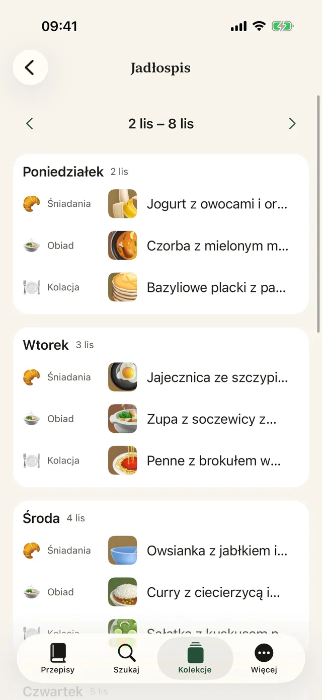
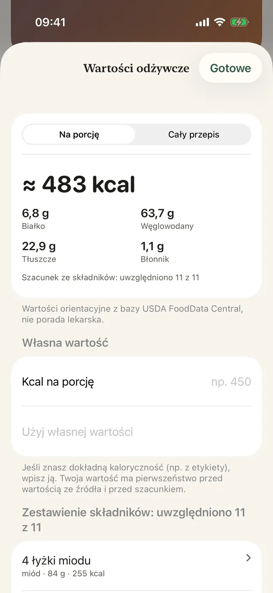
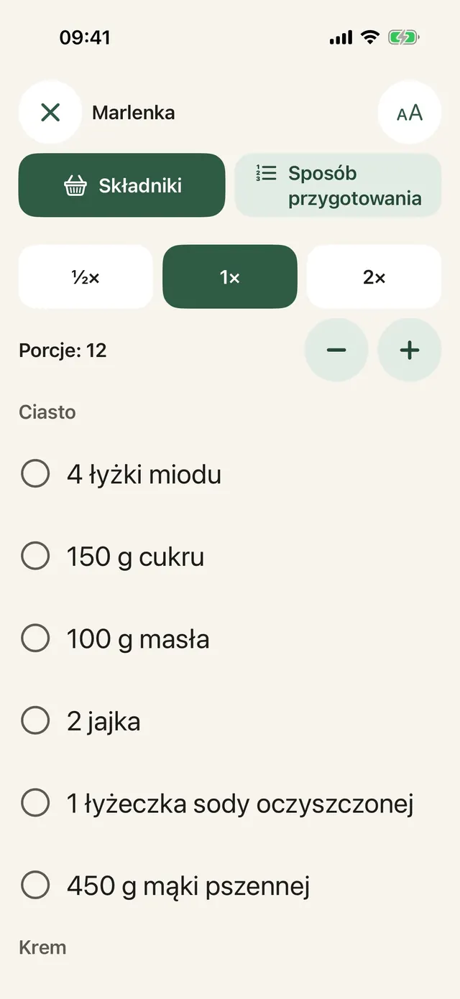
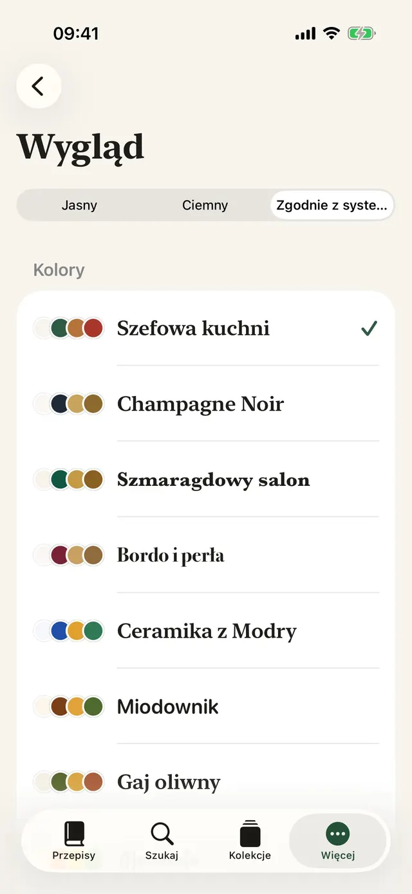
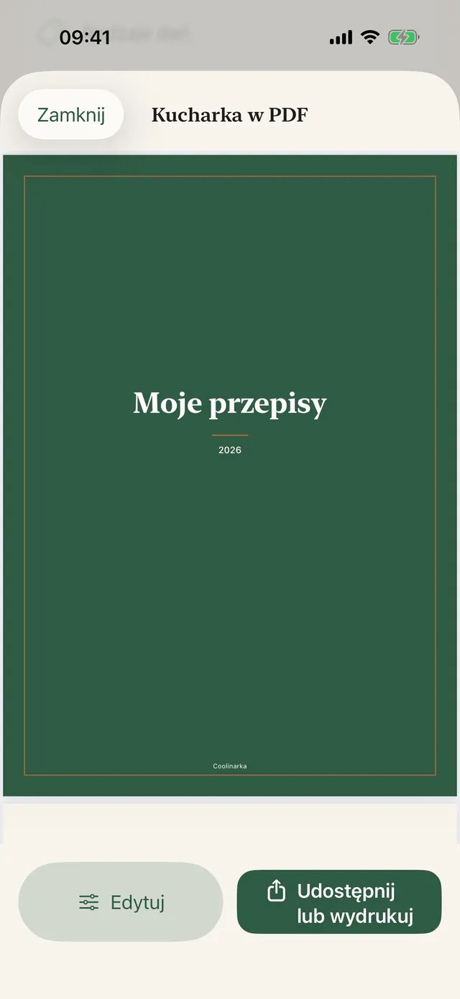
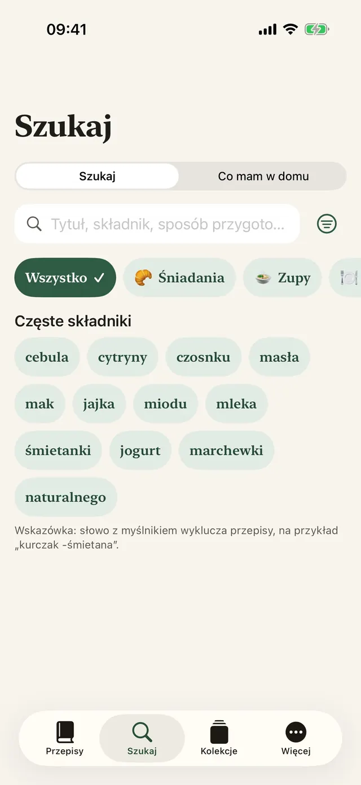
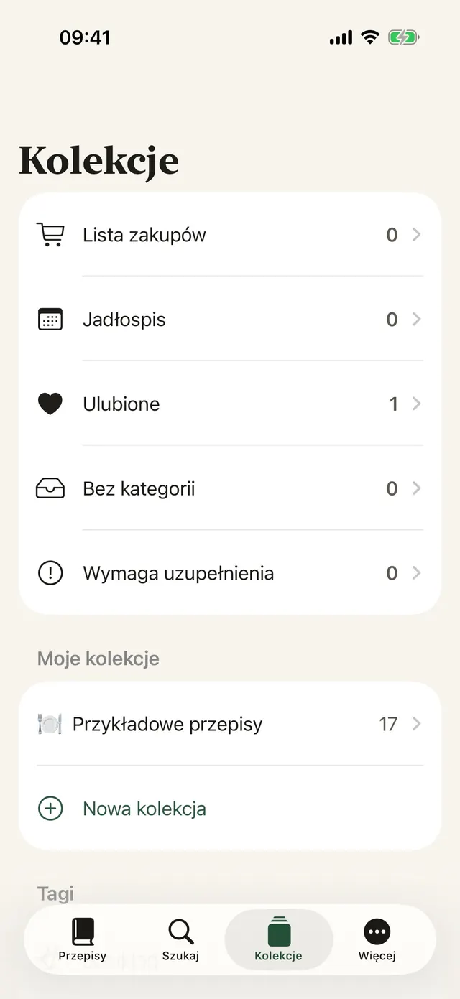

Zapisujesz jednym stuknięciem
W Instagramie, Facebooku lub Safari stuknij Udostępnij i wybierz Coolinarka.
Zapisz przepis z Instagrama, Facebooka, internetu albo filmu. Coolinarka zamieni go w przejrzystą listę składników i kroków, a przy gotowaniu poprowadzi Cię krok po kroku.
Na iPhone’a i iPada, za darmo. Wersja na Androida już wkrótce w Google Play.

Tak wygląda przepis w poście w mediach społecznościowych. Jedno stuknięcie i wszystko jest na swoim miejscu, łącznie z porcjami, które możesz przeliczyć.
😍😍 Penne z brokułem w sosie śmietanowym!!! 400 g penne, 1 brokuł, 250 ml śmietanki do gotowania, 2 ząbki czosnku, 50 g parmezanu, sól i pieprz ... Ugotuj penne według instrukcji na opakowaniu, na ostatnie 4 minuty dodaj różyczki brokułu. Na oleju krótko podsmaż czosnek, wlej śmietankę i podgrzej. Odcedzony makaron z brokułem wymieszaj z sosem i posyp parmezanem. 🔥🔥 #penne #food
Proste danie z makaronem, które lubią też dzieci.
Przykładowy przepis z aplikacji. Prawdziwe posty bywają jeszcze bardziej chaotyczne, a Coolinarka radzi sobie z nimi także ze zrzutu ekranu czy filmu.
Duża czcionka, jeden krok na ekranie, a wyświetlacz nie gaśnie. Minutnik włączysz jednym stuknięciem, nawet gdy masz ręce w mące.
W tej prezentacji minutnik działa szybciej.
Ugotuj penne według instrukcji na opakowaniu, na ostatnie 4 minuty dodaj różyczki brokułu.
Składniki z kilku przepisów sumują się same. Zmień kraj i zobacz, jak szukane słowo tłumaczy się na język sklepu, nawet gdy przepis jest w innym języku.
Produkt dodajesz do koszyka w sklepie. Aplikacja nie ma dostępu do Twojego konta w sklepie. Dostępność zależy od Twojego adresu.
Polka na Słowacji, Polak w Pradze. W obcym sklepie wystarczy drobna pomyłka i w koszyku ląduje coś zupełnie innego. Coolinarka szuka w języku sklepu, żeby Ci się to nie przydarzyło. Wiesz, co trafiłoby do Twojego koszyka?
Dziewięć motywów z własną ikoną, tryb ciemny i większa czcionka. Wybierz jeden, a zmieni się cała ta strona, dokładnie jak aplikacja.
Prawdziwe ekrany, w języku, w którym czytasz tę stronę.







W Instagramie, Facebooku lub Safari stuknij Udostępnij i wybierz Coolinarka.
Z filmu lub nagrania ekranu powstaje przepis, a mowa jest spisywana bezpośrednio w telefonie.
Zaplanuj cały tydzień, puste pola uzupełnisz z ulubionych, a wszystko wyślesz na listę zakupów.
Rodzaje dań, tagi, ulubione i własne kolekcje.
Według nazwy, składników lub sposobu przygotowania, bez względu na znaki diakrytyczne.
Widżet Co dziś ugotować na ekranie początkowym i ekranie blokady oraz Siri: „Co mam ugotować w Coolinarce”.
Odbiorca otworzy go w Coolinarce razem ze zdjęciem, a Twoich ocen i notatek w nim nie ma.
Kadrowanie, obracanie i filtry.
Przepisy synchronizują się przez iCloud między urządzeniami z tym samym kontem Apple.
Zrób kopię zapasową kolekcji albo przenieś ją do innej aplikacji.
Łącznie z przykładowymi przepisami i szacowaniem kalorii.
Aplikacja działa bez konta, reklam i śledzenia. Przepisy zostają na Twoim urządzeniu i w Twoim prywatnym iCloud, a deweloper nie ma do nich dostępu.
Przepisy, import, eksport, kopie zapasowe, iCloud i tryb gotowania nic nie kosztują. Plus to jednorazowy zakup bez subskrypcji, którym możesz dzielić się z rodziną.
Wartości są orientacyjne i nie stanowią porady lekarskiej. Obliczenia odbywają się na urządzeniu.
Pobierz Coolinarkę i zapisz pierwszy przepis jeszcze dziś.
Na iPhone’a i iPada, za darmo. Wersja na Androida już wkrótce w Google Play.